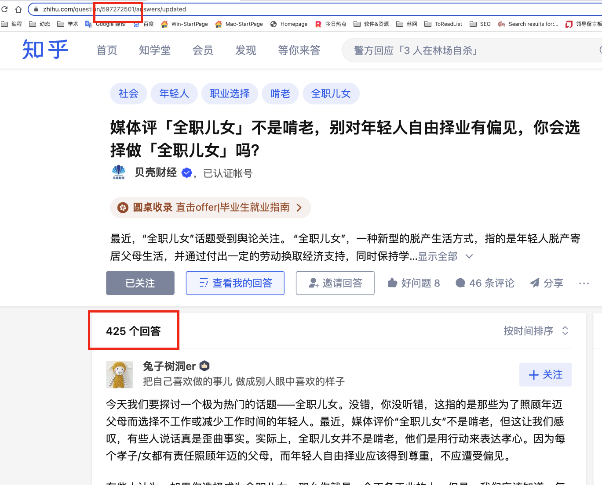
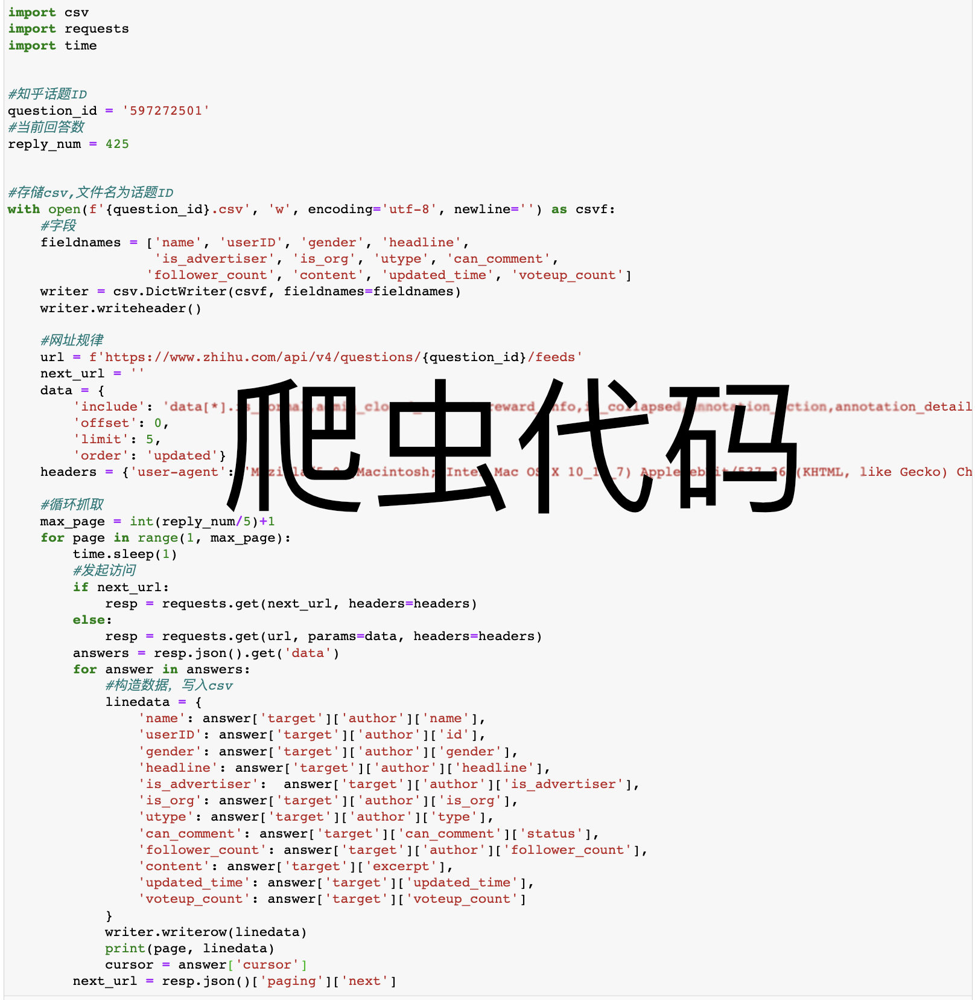
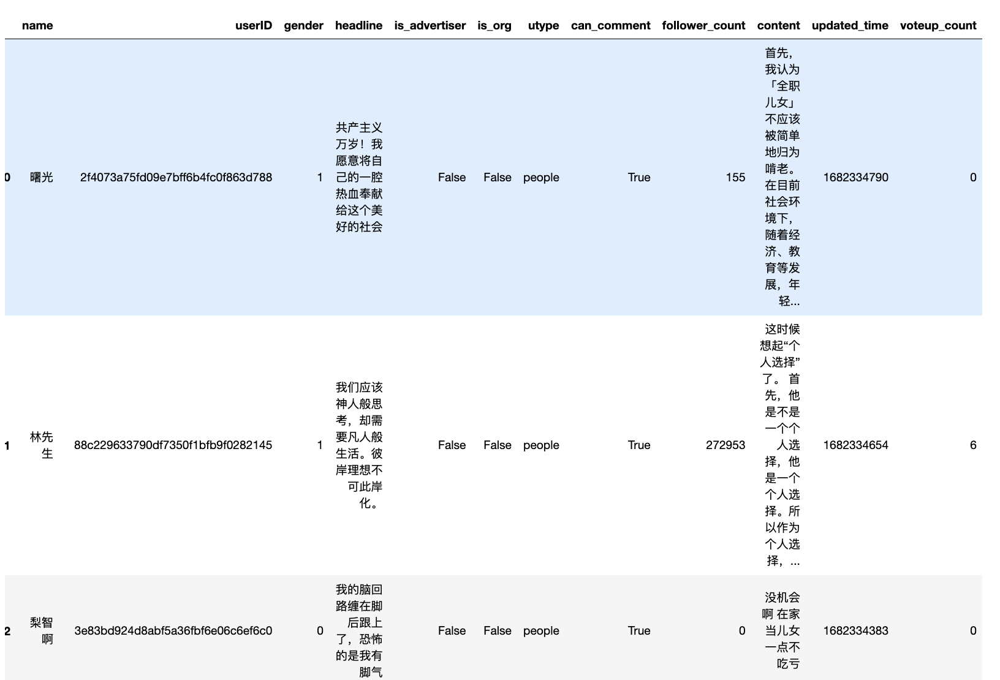
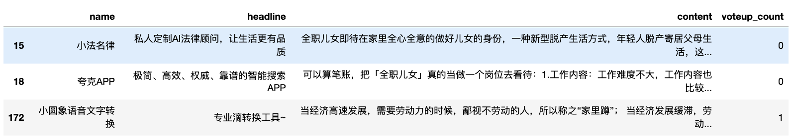
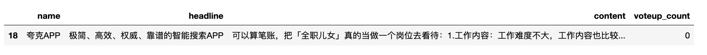
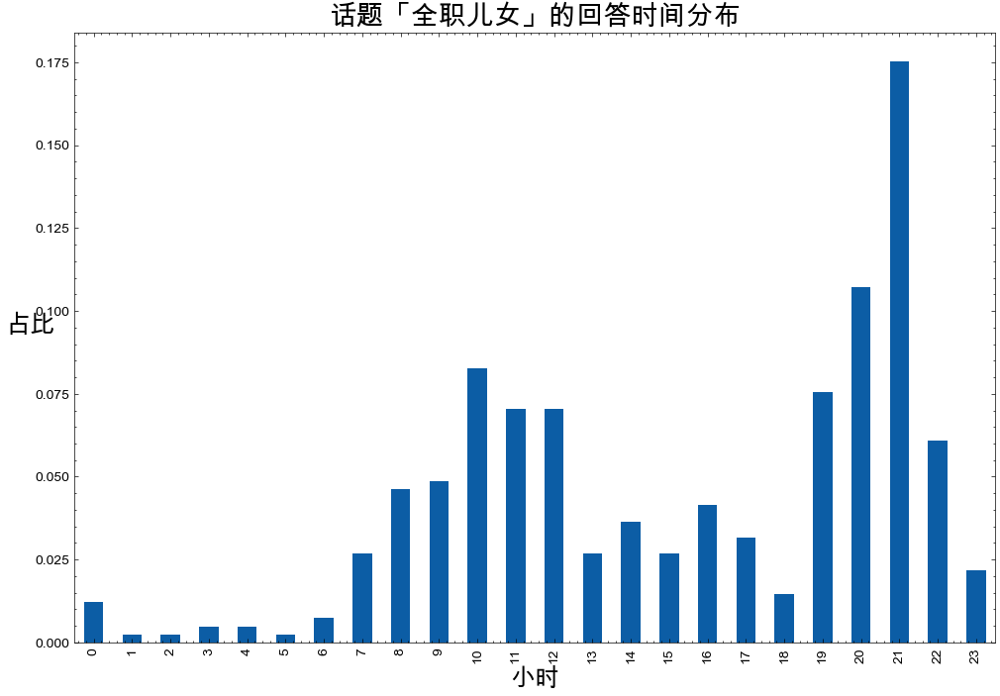
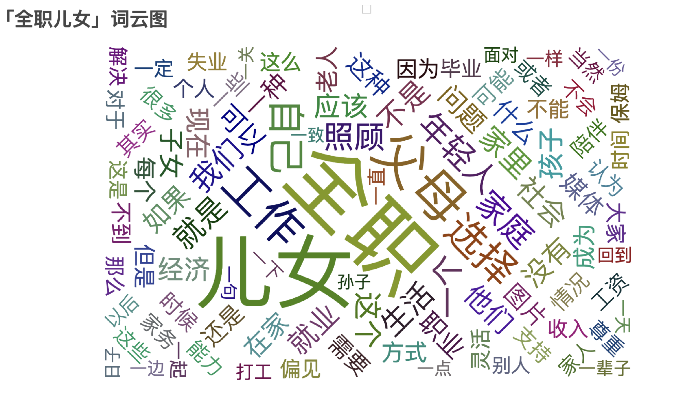

相关内容
除爬虫部分外，本文剩余部分的数据、代码全部免费下载。
一、爬虫采集数据
知乎话题「媒体评「全职儿女」不是啃老，别对年轻人自由择业有偏见，你会选择做「全职儿女」吗？」的数据采集于2023年4月23日。
购买即可获取本文源代码， 更改话题id即可采集其他话题内容。短期内本文的爬虫代码是有效的，但随着时间推移，使用爬虫的人越来越多， 代码失效的概率越来越大，建议半年后的读者不要购买本文。

根据截图，获取爬虫运行的初始参数
#话题ID
question_id = 597272501
#话题回答数
reply_num = 425
代码如下

Run
1 {'name': '知乎用户', 'userID': '07725bbc88d459242cf5a74130069b97', 'gender': 0, 'headline': '', 'is_advertiser': False, 'is_org': False, 'utype': 'people', 'can_comment': True, 'follower_count': 1293, 'content': '今天我们要探讨一个极为热门的话题——全职儿女。没错，你没听错，这指的是那些为了照顾年迈父母而选择不工作或减少工作时间的年轻人。最近，媒体评价“全职儿女”不是啃老，但这让我们感叹，有些人说话真是歪曲事实。实际上，全职儿女并不是啃老，他们是用行动来表达孝心。因为每个孝子/女都有责任照顾年迈的父母，而年轻人自由择业应该得到尊重，不应遭受偏见。 有些人认为，如果你选择成为全职儿女，那么你就是一个不务正业的…', 'updated_time': 1682333713, 'voteup_count': 0}
1 {'name': 'think More', 'userID': '336700e4d2c07ce8d6e2bfac60548ede', 'gender': -1, 'headline': '这是一个坚定的共产主义者', 'is_advertiser': False, 'is_org': False, 'utype': 'people', 'can_comment': True, 'follower_count': 19, 'content': '真正的啃老：外出奋斗，掏空六个钱包大城市买房 真正的孝顺：家中添一双碗筷，照顾陪着家里老人', 'updated_time': 1682330196, 'voteup_count': 0}
1 {'name': '死而后已杨文理', ......}
1 {'name': '暗中观察', ......}
1 {'name': '匿名用户', ......}
2 {'name': '知乎用户', ......}
......
82 {'name': '说糖',......}
82 {'name': '子玄又子玄', 'userID': '7b3efba3bfd8f09ab01daac61ec9412b', 'gender': 0, 'headline': '。', 'is_advertiser': False, 'is_org': False, 'utype': 'people', 'can_comment': True, 'follower_count': 5, 'content': '最主要的还是要看家庭的经济能力 不是所有人都有得选的', 'updated_time': 1682239745, 'voteup_count': 0}
二、读取数据
读取刚刚采集的425条回答数据，存储于 597272501.csv
回答数据字段含
- name 用户(知乎回答者)名
- userID 用户ID
- gender 用户性别, 1为男性， 0为女性, -1未知。
- headline 用户签名
- is_advertiser 用户是否为广告人员
- is_org 用户是否为机构
- utype 用户的类型
- follower_count 用户的粉丝数
- content 回答的内容
- can_comment 其他用户是否有权限对该回答进行互动评论
- updated_time 更新时间，时间戳。
- voteup_count 点赞数
import pandas as pd
df = pd.read_csv('597272501.csv', encoding='utf-8')
df.head()

#425条数据，采集到411条
len(df)
Run
411
三、探索性分析
数据存储为csv，可以借助pandas做一些简单的统计性分析。
3.1 性别
#该话题男性占比
#男1， 女0, 未知-1。
male = len(df[df.gender==1])/len(df)
female = len(df[df.gender==0])/len(df)
other_sex = len(df[df.gender==-1])/len(df)
print(f'男性占比 : {male}')
print(f'女性占比 : {female}')
print(f'未知占比 : {other_sex}')
Run
男性占比 : 0.5036496350364964
女性占比 : 0.18248175182481752
未知占比 : 0.31386861313868614
3.2 用户身份
- 回答者账号是机构号
- 回答者账号是营销者
df.is_org.value_counts()
Run
False 408
True 3
Name: is_org, dtype: int64
#回答者账号是机构的占比
df.is_org.sum()/len(df)
Run
0.0072992700729927005
#回答者账号是机构的
df[df.is_org==True][['name', 'headline', 'content', 'voteup_count']]

# 回答者账号是广告人员的
df[df.is_advertiser==True][['name', 'headline', 'content', 'voteup_count']]

3.3 时间
采集的时间数据类似1682334790，是一种时间戳记录方式。
时间戳是某时间距 1970 年 1 月 1 日 00:00:00 UTC 所经过的秒数。
df['updated_time']
Run
0 1682334790
1 1682334654
2 1682334383
3 1682334155
4 1682333713
...
406 1682242537
407 1682240286
408 1682240054
409 1682239986
410 1682239745
Name: updated_time, Length: 411, dtype: int64
df['updated_time'] = df['updated_time'].apply(lambda k: datetime.datetime.fromtimestamp(k))
df['updated_time']
Run
0 2023-04-24 19:13:10
1 2023-04-24 19:10:54
2 2023-04-24 19:06:23
3 2023-04-24 19:02:35
4 2023-04-24 18:55:13
...
406 2023-04-23 17:35:37
407 2023-04-23 16:58:06
408 2023-04-23 16:54:14
409 2023-04-23 16:53:06
410 2023-04-23 16:49:05
Name: updated_time, Length: 411, dtype: datetime64[ns]
查看下这些知乎用户回答的24小时分布情况
import matplotlib.pyplot as plt
import matplotlib
import matplotlib_inline
matplotlib_inline.backend_inline.set_matplotlib_formats('png', 'svg')
import scienceplots
import platform
plt.style.use(['science', 'no-latex', 'cjk-sc-font'])
system = platform.system() # 获取操作系统类型
if system == 'Windows':
font = {'family': 'SimHei'}
elif system == 'Darwin':
font = {'family': 'Arial Unicode MS'}
else:
font = {'family': 'sans-serif'}
matplotlib.rc('font', **font) # 设置全局字体
plt.figure(figsize=(12, 8))
df['updated_time'].dt.hour.value_counts(normalize=True).sort_index().plot(kind='bar')
plt.title('话题「全职儿女」的回答时间分布', fontsize=20)
plt.xlabel('小时', fontsize=18)
plt.ylabel('占比', rotation=0, fontsize=18)

3.3 词云图
运行词云图代码，查看该话题回答的概览。
import jieba
from pyecharts import options as opts
from pyecharts.charts import WordCloud
import re
text = ''.join(df.content)
text = re.sub('[^\u4e00-\u9fa5]+', '', text)
words = jieba.lcut(text)
words = [w for w in words if len(w)>1]
records = []
for w in set(words):
freq = words.count(w)
records.append((w, freq))
records = sorted(records, key=lambda k:k[1], reverse=True)
wordcounts = [(w, str(f)) for w,f in records]
wc = WordCloud()
wc.add(series_name="", data_pair=wordcounts, word_size_range=[20, 100])
wc.set_global_opts(
title_opts=opts.TitleOpts(title="「全职儿女」词云图", title_textstyle_opts=opts.TextStyleOpts(font_size=23)
),
tooltip_opts=opts.TooltipOpts(is_show=True),
)
wc.render("全职儿女.html") #存储位置
生成的 全职儿女.html 文件850kb，使用浏览器打开时候如果看不到内容，不要慌，需要渲染大概30秒才能出图

四、代码下载
4.1 免费下载
链接: https://pan.baidu.com/s/1bYeVzqTmPL8L9IXLTYf0RA 提取码: nm91
4.2 付费下载
购买即可获取「本文全部源代码」， 更改话题id即可采集其他话题内容。短期内本文的爬虫代码是有效的，但随着时间推移，使用爬虫的人越来越多， 代码失效的概率越来越大，建议半年后的读者不要购买本文。